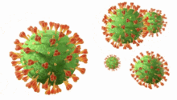
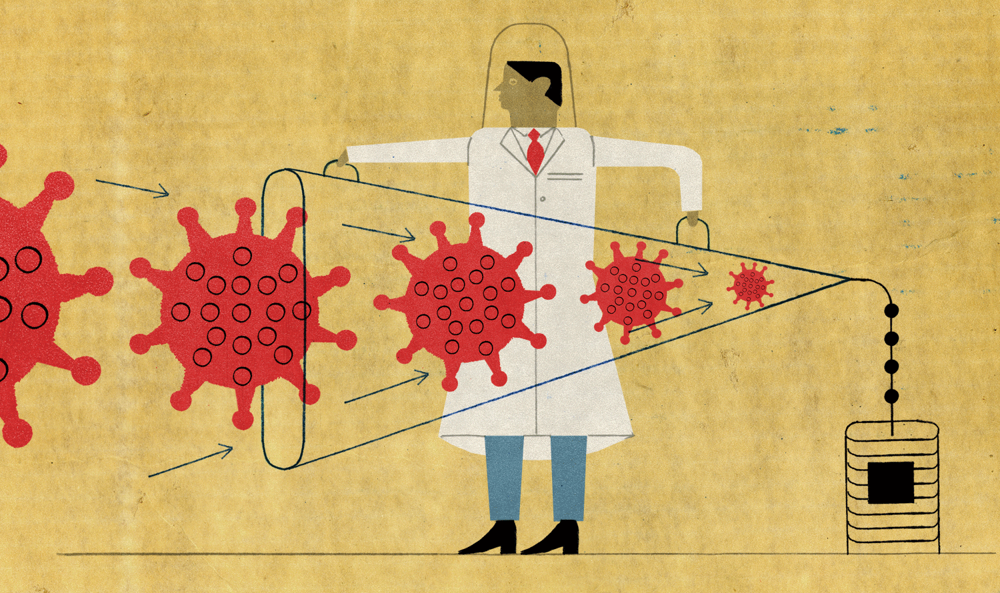

Viruses are constantly changing. Over time, new variants of the virus appear. There are different types of coronaviruses that cause disease in animals and humans.
coronavirus is large group of viruses. They consist of a core of genetic, material surrounded by a lipid envelope with protein spikes. This gives it the appearance of a crown.

There are four main subtypes of coronavirus,
Coronaviruses
- 229E (alpha coronaviruses)
- NL63(alpha coronaviruses)
- OC43(beta coronaviruses)
- HKU1(beta coronaviruses)
- SARS-COV (beta coronaviruses)
severe acute respiratory syndrome coronaviruses.
First identified – China in 2003
- MERS-COV (beta coronaviruses)
Middle East respiratory syndrome coronaviruses.
First identified – Saudi Arabia in 2012
- SARS-COV-2 (covid-19)
It is a new coronavirus.
First reported- china in December 2019

Covid-19
Covid-19 gene variants are emerging worldwide. There are multiple variants of the virus that causes covid-19 in the united states and globally.

There are three primary variants,
- First identified – United Kingdom
(spreads faster and easier between people. Higher potential for transmission.)
- Second identified – South Africa
(Higher potential for transmission.)
- Third identified – Brazil
(Still new more to lean.)
There variants of SARA-COV-2 (COVID-19) were defined
- Variant of interest (VOI)
- Variant of concern (VOC)
- Variant of high consequence (VOHC)
Variant of interest
| Variant |
Frist Detected |
| B.1.526 |
(New York) – November 2020 |
| B.1.526.1 |
(New York) – October 2020 |
| B.1.525 |
(Kingdom /Nigeria) – December 2020 |
| p.2 |
(brazil) – April 2020 |
characteristics of a variant of interest
- Transmission diagnosis, therapy or have an impact on the immune escape.
- Increase in event or unique clusters.
- Expansion in the us or in other countries.
Variant of concern
| Variant |
Frist Detected |
| b.1.1.7 |
(Kingdom) |
| p.1 |
(Japan / Brazil) |
| B.1.351 |
(South Africa) |
| B.1.427 |
(California) |
| B.1.429 |
(California) |
characteristics of a variant of interest
- Effect on diagnosis, treatment, or vaccine.
- Increased transmission.
- Increased transmission.
Variant of high consequence
To date, no variants of high consequence.